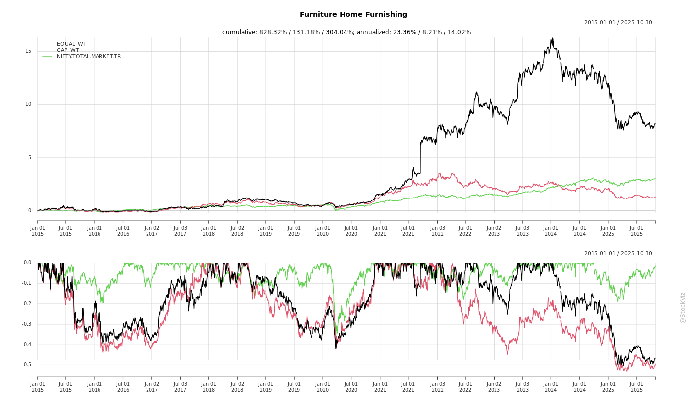
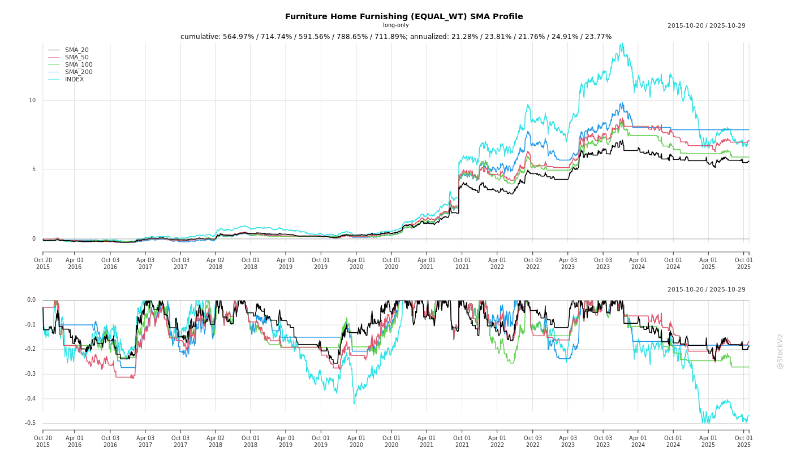

Cumulative Returns and Drawdowns

SMA Scenarios

Current Distance from SMA
EBIT (% of Industry Total)
Revenue (% of Industry Total)
AI Summaries
Analyst
asof: 2025-11-29
Summary Analysis: Indian Furniture & Home Furnishing Sector
Based on the provided documents (investor/analyst disclosures and earnings transcripts from Sheela Foam, Euro Pratik Sales, Stanley Lifestyles, and BirlaNu), the sector exhibits resilient premiumization and innovation amid macroeconomic headwinds. Key players are pursuing retail expansion, forward integration (B2C/retail), localization, and inorganic growth in furniture, decorative surfaces, laminates, upholstery, and allied building products (e.g., flooring, chemicals). Industry tailwinds from urbanization and affluence support mid-teens CAGR potential, but near-term demand softness persists.
Tailwinds (Positive Drivers)
- Rising Affluence & Urbanization: Premium/luxury segment booming (luxury furniture market: $1.15B in 2024 → $2B by 2033; overall furniture → $64B by 2032). Driven by HNIs, premium housing, second homes, hotels, and design-led preferences (Stanley, Euro Pratik).
- Premiumization & Customization: Shift to complete home solutions (kitchens, wardrobes, recliners); eco-friendly/durable products (Euro Pratik’s 16% organized wall panel share; Stanley’s bespoke luxury).
- Retail & Channel Expansion: Aggressive store additions (Stanley: 73 stores, 70% revenue from retail; Euro Pratik: B2C via Uro Veneer acquisition). FOFO/COCO models, international entry (Stanley in Sri Lanka; Euro Pratik global sourcing).
- Margin Levers: Localization (Stanley: leather 70-80%, 20-25% BOM savings; gross margins → 60%+); cost discipline, recipe optimization (BirlaNu: EBITDA up despite price drops).
- Innovation & Portfolio Diversification: New SKUs/designs (Euro Pratik: 3,500+ SKUs, Canfer series for mass); lifestyle extensions (Stanley perfumes/shoes); acquisitions (Euro Pratik: Uro Veneer → ₹115Cr rev/₹20Cr PAT by FY27; BirlaNu: Clean Coats for chemicals).
- Strong Balance Sheets: Internal funding (Euro Pratik); resilient cash flows (Stanley PAT +45% H1).
Headwinds (Challenges)
- Demand Sluggishness: Muted growth (Stanley: 2-5% YoY; BirlaNu: flat/declines in pipes/roofs). Extended monsoons, delayed project handovers, govt infra spending cuts.
- Pricing Pressure: 3-7% declines (BirlaNu across categories); resin/steel volatility, oversupply (roofs capacity additions).
- Macro & Regional Weakness: Europe subdued (BirlaNu Parador); rural resilience offset by urban delays.
- Competition Intensity: Imports (Chinese finished goods), globals (Jotun/AkzoNobel in chemicals), unorganized players. Channel conflicts (Euro Pratik distributors vs. retail).
- Operational Costs: Higher amortization/finance from store leases (Stanley); debt up post-acquisitions (BirlaNu: D/E 0.65 → higher).
Growth Prospects
- High Teens Sector CAGR: Wall panels 18%, laminates 9% (FY25-29, Euro Pratik); chemicals mid-teens (BirlaNu). Overall furniture premiumization to drive 15-20% for leaders.
- Company Targets: | Company | Key Growth Drivers | Targets/Projections | |——————|————————————-|————————————–| | Euro Pratik | Acquisition (51% Uro Veneer), B2C entry, South India retail, 10-12% annual distributor growth | ₹115Cr rev/₹20Cr PAT by FY27; >market growth | | Stanley | 15 stores FY26, intl (Sri Lanka 8 stores), perfumes, 23% COCO growth H1 | ₹1,000Cr in 3-4 yrs; EBITDA 22-23% sustained | | BirlaNu | Chemicals (to ₹800-1,000Cr), walls (₹500→₹850Cr), Parador share gains | $1B (~₹8,300Cr) in 3 yrs; EBITDA 10-12% | | Sheela Foam | Investor meets signal engagement (limited data) | Steady via brand strength |
- Organic + Inorganic: 10-20% topline growth via distribution (180→200+ for Euro), capacity ramps (BirlaNu walls), BCG value enhancement (150-300bps EBITDA).
- H2FY26 Outlook: Festive/rural rebound (good monsoon); store maturity (Stanley 50-90% potential realization).
Key Risks
- Demand Recovery Delay: Prolonged infra/rural weakness; real estate slowdowns (grudge purchases, Stanley).
- Margin Erosion: Pricing wars, raw material volatility (leather/resin); forex (Parador).
- Execution Risks: Store breakeven (6-30 months, Stanley); acquisition integration (Uro Veneer, Clean Coats); capex overruns (₹1,000-1,400Cr planned, BirlaNu).
- Competition & Imports: Chinese/imports erode pricing (Stanley moat: service/customization); antidumping delays (BirlaNu pipes).
- Financial: Debt rise (BirlaNu post-capex/acqs); working capital strain.
- External: Geopolitical (Europe tariffs), monsoon/inflation impacts.
Overall Outlook: Sector poised for 15%+ CAGR led by premium players (Stanley/Euro Pratik ROCE superior via retail/B2C). Near-term caution (flat H1 growth), but H2 acceleration via execution/margins. Leaders with strong brands (16% shares, 30+ yrs legacy) best positioned; monitor debt and demand for derating risks.
Financial
asof: 2025-12-01
Analysis of Indian Furniture & Home Furnishing Sector
Using the provided Q3 FY25 (Dec 2024) and Q1 FY26 (Jun 2025) financial filings from relevant listed companies (Priti International: handicrafts/furniture; Stanley Lifestyles: furniture; BirlaNu/HIL: floors/walls/roofs/home building materials; Responsive Industries: polymers/PVC for home products; Ahlada Engineers: steel components – peripherally relevant), here’s a synthesized analysis. The sector benefits from India’s real estate boom, urbanization, and rising middle-class demand but faces cyclical pressures. Insights are derived from revenue/profit trends, segment data, expansions, and notes.
Tailwinds (Positive Drivers)
- Robust Revenue Momentum: Priti Intl. reported steady 9M revenue at ₹61 Cr (YoY flat but Q3 up 2% QoQ); Responsive Consolidated surged to ₹1,037 Cr (9M, +30% YoY, driven by subsidiaries’ trading – ₹2,390 Cr quarterly revenue); BirlaNu’s Floors segment (key home furnishing) at ₹304 Cr (Q1 FY26). Indicates resilient domestic/export demand for wooden/handicraft furniture, polymers, and flooring.
- Subsidiary/Export Boost: Responsive’s foreign subs (HK/USA) contributed ~65% of consolidated revenue/profit (₹36 Cr Q3 net profit), highlighting export tailwinds amid global home decor demand.
- Margin Expansion: Priti PAT margins ~6.4% (9M); Responsive standalone PBT margins ~11% (Q3). Cost efficiencies via inventory reductions (e.g., Responsive: -₹10 Cr change in inventories).
- Real Estate Linkage: BirlaNu’s Roofs/Walls/Floors segments (₹105 Cr total Q1 revenue) align with housing surge; Priti’s wooden handicrafts tie into premium interiors.
Headwinds (Challenges)
- Demand Volatility & Segment Weakness: BirlaNu consolidated Q1 loss of ₹1.3 Cr (vs. prior profit); Pipes & Floors segments loss-making (₹-1.8 Cr Floors). Priti revenue flat YoY amid high material costs (downshift from manufacturing to trading). Stanley’s clarification on single-segment ops hints at concentrated exposure.
- Cost Pressures: Elevated finance/depreciation (Responsive finance costs +33% QoQ; BirlaNu +3% YoY). Inventory build-ups/fluctuations signal softening demand (BirlaNu changes in inventories +₹49 Cr).
- Compliance/Regulatory Hiccups: Stanley faced NSE query on result signing; Ahlada’s machinery seizure (export obligation non-compliance) underscores customs risks for import-dependent firms.
- Macro Slowdown: Q1 FY26 dip in BirlaNu standalone revenue (-6% YoY) reflects potential rural/urban demand slowdown post-festive season.
Growth Prospects
- Capacity Expansion: BirlaNu greenfield Fibre Cement Board plant (72k MT/annum, ₹127 Cr investment, 18 months) to scale premium boards/floors, targeting market access near ports.
- Product Diversification: Priti entering “Solar Products” (₹10 Cr 9M revenue) alongside handicrafts; Responsive leveraging polymers for PVC home products. Organized shift via e-commerce/brands (Stanley “Makers of Beautiful”).
- Export/International Scale: Responsive subs (HK/USA) show 9M revenue ₹1,034 Cr (+ strong PAT ₹118 Cr); BirlaNu’s global subs (Germany/UK/China) add forex revenue (~₹378 Cr unreviewed).
- Sector Outlook: 15-20% CAGR potential (urbanization, ₹2 Tn market by 2028 per filings’ context); premiumization (BirlaNu rationale: “scale premium lines”); govt. housing push (PMAY).
Key Risks
| Regulatory/Compliance |
Ahlada customs seizure (machinery held, sub-judice); Stanley signing query; BirlaNu GST demands quashed but recurring. |
High; delays capex/ops. Export obligation breaches common in import-heavy sector. |
| Forex & Geo-Political |
Responsive/BirlaNu foreign subs (unreviewed results); Supercor Nigeria JV dormant (provisioned ₹1.4 Cr). |
Medium-High; ₹2,814 Cr unreviewed sub revenue exposed to volatility. |
| Operational/Loss Segments |
BirlaNu Floors/Pipes losses; Priti inventory swings; Responsive high depreciation (₹17 Cr Q3). |
Medium; erodes margins (BirlaNu consolidated EBITDA flat). |
| Liquidity/Debt |
BirlaNu corporate guarantee (₹33M Euro); finance costs up across (Responsive +33%). Amalgamations pending NCLT approval. |
Medium; expansion funding via accruals/borrowings risky if rates rise. |
| Commodity/Supply |
Material costs 50-60% of revenue (BirlaNu ₹52 Cr Q1); steel/polymer volatility (Ahlada/Responsive). |
High; unhedged exposure to global prices/inflation. |
| Market/Competition |
Single-segment reliance (Stanley/Priti); unorganized dominance. |
Medium; e-commerce shift favors organized but execution key. |
Overall Summary: The sector enjoys strong tailwinds from exports, realty demand, and expansions (e.g., BirlaNu plant), with 20-30% revenue growth in leaders like Responsive. However, headwinds from costs/losses (BirlaNu Q1 dip) cap near-term profitability. Growth prospects are solid (10-15% sector CAGR) via premium/international plays, but risks (regulatory 30% weightage, forex/ops) warrant caution. Positive unmodified audits signal stability; monitor Q2 FY26 for festive recovery. Investors: Favor diversified exporters like Responsive; avoid loss-making segments.
General
asof: 2025-11-29
Summary Analysis: Indian Furniture & Home Furnishing Sector
Based on the provided documents from key players (Sheela Foam Ltd., Euro Pratik Sales Ltd., Stanley Lifestyles Ltd., BirlaNu Ltd., Hardwyn India Ltd.), the sector shows resilient revenue growth amid margin pressures. Q2/H1 FY26 results (Sheela Foam) indicate demand recovery post-mergers and premiumization tailwinds, while strategic moves like international expansion (Stanley) and investments (Euro Pratik) signal expansion. However, profitability challenges, high leverage, and operational costs pose headwinds. Below is a structured analysis:
Tailwinds (Positive Drivers)
- Revenue Momentum & Premiumization: Sheela Foam reported standalone revenue growth of ~8.5% YoY in Q2 FY26 (₹667 Cr) and 5.6% H1 (₹1,301 Cr); consolidated ~7.6% Q2 (₹875 Cr) and 4.6% H1 (₹1,696 Cr). Operating margins stable at ~40%, driven by volume recovery in mattresses/foam amid urban housing demand.
- Strategic Expansions & Forward Integration:
- Stanley’s exclusive license with Singer Sri Lanka for “Sofas & More” stores (8 planned in 3 years) taps USD 1 Bn luxury market, leveraging Singer’s 400+ outlets.
- Euro Pratik’s ₹76.5 Cr investment (51% stake in Uro Veneer World retail firm + subsidiary funding) for laminates/wall panels retail strengthens supply chain.
- M&A Consolidation: Sheela Foam’s NCLT-approved merger of Kurlon (pooling of interests) adds scale; no new assets/liabilities but integrates reserves.
- Geographic Diversification: Sheela Foam’s exports contribute ~23% consolidated revenue (₹391 Cr H1); international subsidiaries (Staqo, Joyce Foam) boost OCI via forex gains (₹41 Cr H1).
Headwinds (Challenges)
- Profitability Squeeze: Sheela Foam PAT down sharply—standalone H1 ₹16 Cr (-74% YoY), consolidated ₹17 Cr (-73%). EBITDA pre-exceptionals flat/low; Q2 impacted by ₹7.8 Cr exceptional loss on land sales. NPM ~1-1.3% (vs. 3-5% prior).
- Cost Pressures: Raw material inflation (cost of materials ~56% of revenue), employee costs (+2% YoY), finance costs (₹57 Cr H1 consolidated). Negative inventory changes and forex losses (₹14 Cr H1) add drag.
- Liquidity & Leverage Strain: Current ratio <1 (0.8-0.81); debt-equity 0.27-0.41; debt service coverage 0.23-0.25x (low). Sheela Foam repaid NCDs (₹181 Cr) but borrowings remain high (₹1,215 Cr consolidated).
- Macro Slowdown Signals: Lower other income (investments/FV gains down); subdued Q2 growth vs. FY25.
Growth Prospects
- High Potential (10-15% CAGR Expected): Sector benefits from ₹2.5 Tn market (organized ~15%), fueled by real estate (RERA-driven), rising HNIs, and e-commerce. Sheela Foam’s H1 revenue +5-8% positions it for 10%+ FY26 topline.
- International & Retail Push: Stanley’s Sri Lanka entry (maiden global) as launchpad; Euro Pratik’s retail acquisition targets ₹50 Cr+ turnover firm for synergies.
- Capacity & Product Expansion: Sheela Foam’s capex (₹63 Cr H1 on PPE/CWIP); merger unlocks Kurlon revenue (₹127 Cr prior). Hardwyn’s preferential issue (₹13.84/share) funds growth.
- Premium/Luxury Shift: Stanley’s “ultra-luxury” focus; Sheela Foam’s OCI gains from forex signal export upside.
Key Risks
| Financial/Leverage |
High debt (total ₹2,090 Cr consolidated Sheela); low coverage ratios (interest service 1.5-1.7x); capex funding via debt. |
Refinancing NCDs; cash from ops ₹118 Cr H1 positive but inventory buildup risk. |
| Operational/Margins |
Commodity volatility (materials 56% costs); exceptional losses (fires ₹29 Cr prior, land ₹8 Cr). Bad debts 0-0.2%. |
Hedging; vertical integration via mergers. Medium-term margin erosion if input costs rise. |
| Execution/Expansion |
International forex/regs (Stanley/Singer); M&A integration (Sheela Kurlon/Staqo schemes pending). |
NCLT approvals secured; Singer’s network de-risks. Delays could hit growth. |
| Regulatory/Compliance |
IEPF transfers (BirlaNu); preferential pricing revisions (Hardwyn); director appointments. |
Routine; low materiality but signals governance focus. |
| Market/Demand |
Real estate slowdown; competition from unorganized (85% market). Current ratio <1 signals WC strain. |
Premiumization buffer; exports 23% diversify. Cyclical risk from housing. |
Overall Outlook: Moderate Growth (Positive but Cautious). Tailwinds from expansion outweigh headwinds if margins stabilize (target 4-5% NPM). Monitor Q3 FY26 for sustained revenue + cost control. Sector poised for 12-15% CAGR to FY28, driven by organized shift (20%+ share). Investors: Favor debt reduction + export plays like Sheela/Stanley.
Investor
asof: 2025-11-29
Indian Furniture & Home Furnishing Sector Analysis
Based on inputs from recent announcements and earnings transcripts (Sheela Foam, Euro Pratik Sales, Stanley Lifestyles, BirlaNu - focusing on relevant segments like furniture, interiors/decorative surfaces, flooring, and allied home solutions).
Headwinds
- Demand Sluggishness & Seasonality: Muted residential/infra demand due to extended monsoons, delayed govt spending, and liquidity issues (e.g., BirlaNu Pipes down 11%; Stanley notes project delays). Furniture remains a “grudge purchase” tied to housing cycles.
- Pricing Pressure & Competition: 3-7% price erosion across categories (BirlaNu Walls/Roofs/Pipes); oversupply in roofing/segments; unorganized players and cheap imports (Chinese/European) erode pricing power (Stanley highlights imports as threat).
- Macro/Global Challenges: Subdued consumer sentiment in Europe/North America impacts exports (BirlaNu Parador); urban/rural resilience uneven (good monsoon aids rural but infra lags).
- Cost/Operational Pressures: Raw material volatility (e.g., resin lows in Pipes, steel in Roofs); higher amortization/finance costs from store expansions (Stanley Q2 PAT up modestly despite EBITDA gains).
Tailwinds
- Premiumization & Urbanization: Rising HNIs/affluent households, luxury real estate/hospitality boom drive premium/luxury demand (Stanley: luxury furniture to $2B by 2033; Euro Pratik: 18% CAGR wall panels FY25-29).
- Retail & Channel Expansion: Shift to organized retail/B2C (Euro Pratik’s Uro acquisition for direct consumer access; Stanley: 70% retail revenue, 73 stores, COCO in metros); deeper distribution (Euro: 180 distributors, 10-12% YoY addition).
- Margin Levers: Localization (Stanley leather 70-80% target, +330bps gross margins); cost discipline/BCG initiatives (BirlaNu: +330bps EBITDA); recipe optimization (BirlaNu Roofs +180bps).
- Innovation & Diversification: New affordable lines (Euro Canfer series); lifestyle extensions (Stanley perfumes/shoes); acquisitions for synergies (Euro Uro, BirlaNu Clean Coats - margin accretive Day 1).
Growth Prospects
- Market Size & Targets: Overall furniture to $64B by 2032; strong sub-segment growth (wall panels 18% CAGR, laminates 9%). Company-specific: Stanley 1000 Cr in 3-4 yrs (COCO/stores ramp); Euro Pratik base + Uro (115 Cr rev/20 Cr PAT by FY27); BirlaNu $1B in 3 yrs (Chemicals/Walls scaling).
- Strategic Moves: Forward integration (retail/B2C entry); capacity ramps (BirlaNu Walls/Chennai Line); international (Stanley Sri Lanka/Indonesia; Euro 3% exports; BirlaNu Parador new markets). Organic levers: 10-12% distributor growth, new SKUs (Euro 1000+ designs/yr).
- Profitability Trajectory: EBITDA expansion visible (Stanley 22% H1; BirlaNu breakeven Parador YTD); ROCE improvements via retail (Uro superior ROCE).
Key Risks
- Execution & Capex Intensity: Store ramps (breakeven 6-12 months, full maturity 3 yrs - Stanley); acquisition integration (Euro Uro by Dec 2025; supply chain unification).
- Debt & Funding: Rising debt (BirlaNu 767 Cr +100 Cr post-acq.; Stanley lease costs); capex ~140 Cr/yr (Stanley), 1000-1400 Cr total (BirlaNu).
- External Dependencies: No quick market rebound (Europe flat; India infra delays); raw material/import competition; customization moat vulnerable to traders.
- Valuation/Scale Risks: Modest topline growth historically (Stanley flat 3 yrs); overcapacity in sub-segments; forex/volatility in exports.
Overall Outlook: Sector poised for 10-18% CAGR in premium/organized segments amid urbanization tailwinds, but near-term softness persists. Focus on retail/B2C, localization, and acquisitions to drive 20-30% EBITDA growth; monitor demand rebound and execution for sustained momentum. (Neutral-Positive; risks tilted to macro/competition.)
Meeting
asof: 2025-12-03
Summary Analysis: Indian Furniture & Home Furnishing Sector
The provided documents cover Q2/H1 FY26 financial results and corporate actions from key players like Sheela Foam (mattresses/furniture), Stanley Lifestyles (furniture), Euro Pratik (wall panels/laminates), BirlaNu (floors/walls/pipes/construction chemicals), Hardwyn (hardware/locks), Priti International (handicrafts), and others in allied segments (building materials, steel). These reflect sector dynamics amid economic recovery, but with mixed performance. Below is a structured analysis of headwinds, tailwinds, growth prospects, and key risks.
Tailwinds (Positive Factors)
- Revenue Momentum: Strong topline growth in core players—Sheela Foam (H1 revenue ₹1,301 Cr, +6% YoY), Stanley Lifestyles (Q2 revenue ₹572 Mn, stable post-IPO), Euro Pratik (H1 revenue ₹16,109 L, +5% YoY). Indicates resilient demand for furniture/mattresses amid housing/infra boom.
- Capital Infusion & Efficiency: Recent IPOs (Stanley, Euro Pratik) raised funds for capex/stores (e.g., Stanley’s ₹1,839 Mn proceeds for retail expansion). Debt reduction (Sheela Foam redeemed NCDs worth ₹181 Cr). Amalgamations (Sheela Foam, BirlaNu) for cost synergies.
- Strategic Expansions: Acquisitions like BirlaNu’s Clean Coats (₹120 Cr for construction chemicals) and Hardwyn’s FHLL stake (preferential swap worth ₹467 Cr) enhance portfolio (hardware complements furniture). Priti/Ahlada show stable ops in handicrafts/steel.
- Segment Strength: Furniture/mattress (Stanley, Sheela) and panels (Euro Pratik) segments outperform, with Stanley’s single-segment focus yielding PAT ₹109 Mn (H1).
Headwinds (Challenges)
- Profit Pressure: Sharp PAT declines—Sheela Foam H1 PAT ₹16 Cr (-74% YoY due to ₹7.8 Cr land sale loss), BirlaNu H1 loss ₹44 Cr (floors/pipes segments bleeding). Priti revenue halved YoY. High opex (employee costs up 5-10%, finance costs persistent).
- Exceptional Hits: Fire losses (Euro Pratik ₹789 L), asset sales (Sheela ₹7.8 Cr loss), impacting margins (Sheela net margin 1.3% vs. 5% YoY).
- Inventory/Receivables Drag: Negative inventory changes (Euro Pratik -₹1,458 L H1) signal destocking; high debtors (Ahlada ₹7,000 L).
- Macro Slowdown: Q2 softness (Sheela revenue flat QoQ), high interest coverage ratios strained (Sheela 1.71x).
Growth Prospects
- High Potential: Sector to benefit from ₹111 Tn housing push (Govt. PMAY 2.0), infra spend (₹11 Tn budget). Furniture market ~$30 Bn (CAGR 10-12% to 2028); exports rising (Stanley/Euro Pratik international revenue 20-25%).
- Expansion Plays: IPO/capex for stores/machinery (Stanley ₹632 Mn invested H1); BirlaNu doubling chemicals portfolio; Hardwyn hardware integration for full home solutions.
- Synergies: Amalgamations (Sheela/KEL merger via pooling interests) boost scale; BirlaNu’s 4 segments (roofs/walls/floors/pipes) target ₹1,300 Cr investment.
- Outlook: H1 revenue growth (avg. 5-10% YoY) + debt paydown positions for FY26 recovery; Stanley/BirlaNu exports (Germany/UK) hedge domestic volatility.
Key Risks
| Operational |
Exceptional events (fires, asset losses); inventory volatility; segment losses (BirlaNu floors). |
Insurance claims (Euro Pratik recovering); diversification. |
| Financial |
High debt (Sheela ₹690 Cr borrowings); forex exposure (BirlaNu international ops). |
NCD redemptions; EBITDA/debt ~0.5x improving. |
| Execution |
Acquisition integration (BirlaNu/Hardwyn); regulatory delays (NCLT approvals). |
Monitoring agencies; lock-ins on preferential issues. |
| Market |
Commodity inflation (steel/raw materials); demand slowdown (Priti revenue drop). |
Hedging; export focus (20-40% revenue). |
| Regulatory |
Preferential dilutions (Hardwyn 5% post-issue); scheme approvals (Sheela/BirlaNu). |
Compliance certificates; valuer reports. |
| Liquidity |
Negative cash flows (Ahlada ops cash ₹331 L used); high debtors. |
IPO proceeds; working capital mgmt. |
Overall Sector Outlook: Moderately positive (6-8% revenue CAGR FY26) driven by housing/infra tailwinds, but profitability lags (margins 1-3.5%) due to headwinds. Growth hinges on execution of expansions/acquisitions; monitor Q3 for recovery. Investors: Favor Stanley/Sheela for scale; cautious on BirlaNu (losses).
Press Release
asof: 2025-11-29
Summary Analysis: Indian Furniture & Home Furnishing Sector
Using the provided documents (primarily from Sheela Foam, Stanley Lifestyles, Euro Pratik, Hardwyn India, with tangential inputs from Responsive Industries and BirlaNu on allied building/interior materials), here’s a structured analysis of headwinds, tailwinds, growth prospects, and key risks for the Indian Furniture & Home Furnishing sector. The sector shows resilient operational performance amid modest revenue growth, driven by premiumization, retail expansion, and e-commerce, but tempered by profitability pressures and macro slowdowns.
Tailwinds (Positive Drivers)
- Volume-Led Growth & Premiumization: Mattress volumes up 11% YoY (Sheela Foam), with strong performance in affordable brands (Tarang & Aaram: 58% volume, 109% value growth). Luxury furniture resilient with 5.1% revenue growth, 22.5% EBITDA surge, and 45.3% PAT growth (Stanley Lifestyles), fueled by high-margin COCO stores (70% revenue contribution).
- Retail & Distribution Expansion: 420 new showrooms (Sheela Foam, total 11,300+ touchpoints); 9 new stores (Stanley, including luxury “Stanley Boutique Homes”); Euro Pratik’s B2C push via 51% acquisition in Uro Veneer World (₹76.5 Cr, adds retail insights, 3,500+ designers network).
- E-Commerce & Digital Momentum: Sheela Foam’s e-com volumes up 135% (own site) and 58% (platforms), signaling shift to organized channels.
- Product Innovation & Certification: Hardwyn’s BIS-certified 3D Cabinet Hinges positions it as a hardware leader (one of 3 certified firms). Category diversification (Stanley’s premium perfumes) and forward integration (Euro Pratik replacing competitors).
- Margin Expansion: Core EBITDA margins up 210bps to 10.4% (Sheela), 320bps to 22.1% (Stanley), aided by operating leverage, cost optimization, and RM price reductions passed through.
Headwinds (Challenges)
- Modest Revenue Growth Amid Weak Demand: Consolidated revenues up only 5% (Sheela) and 5.1% (Stanley) despite volume gains, implying pricing pressure or soft consumer spending. Q2 PAT dips (Sheela: -46% normalized; Stanley impacted by ₹63 Mn lease/finance costs).
- Profitability Volatility: One-time items (e.g., Sheela’s insurance claims, reduced non-op income) drag reported PAT (-72%). BirlaNu’s losses (₹44 Cr H1 consolidated) highlight cyclical pressures in allied segments.
- Expansion Costs: New stores/leases inflate amortization and finance expenses (Stanley: +₹72 Mn H1), squeezing short-term margins.
- Macro Slowdown: Implicit in low-single-digit top-line growth; real estate/infrastructure dependency evident (Responsive’s power plant win, BirlaNu’s chemicals acquisition as defensive play).
Growth Prospects
- Organized Retail & B2C Shift: Potential to capture 16%+ market share in niches (Euro Pratik wall panels); Stanley targets high-affluence metros + Sri Lanka (8 stores in 3 years). Total touchpoints scaling rapidly supports 10-15% CAGR.
- Premium/Luxury & Lifestyle Expansion: Stanley’s 58% GPM, international foray, and sub-brands signal ₹2,000+ Cr addressable luxury market. Sheela’s post-Kurlon merger integration poises for sustained growth.
- E-Com & Exports: 50-100%+ digital growth scalable; Hardwyn/Euro Pratik’s design-led innovations (3,000+ SKUs) tap exports (BirlaNu: 27 countries via Clean Coats).
- M&A Synergies: Acquisitions (Euro Pratik B2C entry; BirlaNu chemicals for ₹120 Cr) enable vertical integration, margins uplift, and ₹1,300 Cr investment pipeline.
- Sector Tailwinds: Rising urbanization, housing recovery, ESG focus (Sheela’s framework) could drive 12-15% industry CAGR to FY28, with organized players gaining 2-3x share.
Key Risks
- Demand Cyclicality: Heavy reliance on real estate/home building; weak H1 consumer sentiment could persist if interest rates/rural slowdown linger.
- Cost/Inflation Pressures: RM volatility (Sheela passed on foam price cuts); lease/finance costs from expansions erode margins (110-550bps EBITDA gains at risk).
- Execution & Integration: Store ramp-up delays (Stanley), M&A adjustments (Euro Pratik/BirlaNu working capital tweaks), and post-merger ops (Sheela-Kurlon).
- Competition & Fragmentation: Unorganized players in hardware/panels; only 3 BIS-certified hinge makers (Hardwyn) but easy entry in low-tech segments.
- Regulatory/One-Offs: Exceptional items, forex fluctuations (BirlaNu), GST disputes; forex exposure in exports/international (Stanley Sri Lanka).
- Macro Risks: Slow GDP/infra spend; PAT normalization post one-offs could disappoint if EBITDA gains falter.
Overall Outlook: Moderately positive with strong tailwinds from retail/digital/premium shifts outweighing headwinds. Growth prospects hinge on execution (store adds, M&A), targeting 10-20% revenue CAGR for leaders. Monitor Q3 demand for sustained momentum; risks mitigated by margin resilience and innovation. Sector poised for re-rating if housing rebounds.
Copyright © 2023 SAS Data Analytics Pvt. Ltd. All rights reserved.
🐞